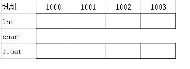

C语言基础
Table of Contents
编译器
文本编辑器
用于对 C 语言代码进行编写，一般来说使用的是 vscode 或者是 vs ， devc++ 之类的，还有在终端上可以直接使用的 vim 之类的编辑器。编辑器的类型无关紧要，主要是用于编写 C 语言代码
编译器
各种编程语言写完之后都不可能直接运行，而是需要编译器来把代码编译成电脑能识别的语言——机器语言，是二进制语言，只有 0 和 1 组成。所以编译的过程相当于是翻译，把 C 代码给翻译成机器代码了。
最常用的就是 GNU 的 C/C++编译器，mingw 中实际上就是 GNU 的编译器
在 GNU 中的编译指令为
|
|
C语言程序结构
C程序主要包括下列指令
预处理指令
就是文件上部以 # 开头的指令，例如
|
|
预处理指令会在预编译的时候就把对应文件中的代码复制过来，预编译指令为
|
|
之后打开 b.i 文件将会看到文件中不仅有 a.c 中的内容，也有 stdio.h 中的内容
函数
函数是一组一起执行一个任务的语句。每个 C 程序都至少有一个函数，即主函数 main() ，所有简单的程序都可以定义其他额外的函数。可以把代码划分到不同的函数中。如何划分代码到不同的函数中是由自己决定的，但在逻辑上，划分通常是根据每个函数执行一个特定的任务来进行的。函数是需要声明的，函数声明告诉编译器函数的名称、返回类型和参数。函数定义提供了函数的实际主体。
|
|
变量
就是在函数中或者全局声明的用于存储数据的东西。声明在函数外的是全局变量，而声明在函数内的是局部变量。还有一种静态变量，变量的寿命是整个程序，只有程序结束之后才会释放掉。
|
|
语句
在 C 语言中有多种语句，可以分为不同的类型
-
表达式语句，由表达式加上分号组成
1int a = 1; -
标签语句，用于
goto语句，允许程序跳转到标签指定的位置，只能在函数内部使用1 2 3 4 5 6 7 8int main() { int a = 0; if(a) goto end; printf("hello\n"); end: return; } -
循环语句，包括
while，for，do-while等1 2 3 4 5 6 7 8while(Conditions) { } for(; Conditions; ) { } do{ }while(Conditions); -
复合语句，用花括号括起来的多条语句，函数定义或者
if-else语句块1 2 3 4{ int a = 0; printf("%d", a); } -
跳转语句，如
break，continue，return等，用于控制程序的流程1 2 3for(;;) { break; } -
选择语句，如
switch语句，根据不同条件执行不同的代码块1 2 3 4 5 6 7 8 9 10switch(condition) { case condition1: printf("condition1"); break; case condtion2: printf("condition2"); break; default: break; } -
函数调用语句，由函数调用加上分号组成
1func(); -
空语句，仅由分号组成
1 2while(1) ;
数据类型
普通类型
| 类型 | 位数 | 字节数 | 解释 |
|---|---|---|---|
| char | 8 | 1 | 有符号字符 |
| unsigned char | 8 | 1 | 无符号字符 |
| short | 16 | 2 | 短整型 |
| unsigned short | 16 | 2 | 无符号短整型 |
| int | 32 | 4 | 整形 |
| unsigned int | 32 | 4 | 无符号整形 |
| float | 32 | 4 | 单精度浮点数 |
| long | 64 | 8 | 长整型 |
| unsigned long | 64 | 8 | 无符号长整型 |
| double | 64 | 8 | 双精度浮点数 |
还有一些特殊的类型 void 的类型，表示没有可用的值，并且函数的返回值有些也是 void 的类型，也就是返回值为空。不同位数的CPU上同一种数据类型大小也不一样，例如在 8 位CPU上的 int 类型就是 8 位，32 位CPU上 int 类型就是 32
位，但是 64 位CPU上 int 类型是 32 位是沿用的 32 位CPU上的设定
指针类型
指针类型在不同位数的 CPU 上是不同的
| CPU位数 | 指针大小 byte |
|---|---|
| 8 | 1 |
| 16 | 2 |
| 32 | 4 |
| 64 | 8 |
指针是指向了一块内存，内存中存放的就是一个变量（或者其他东西）
|
|
函数指针
|
|
变量
变量其实只不过是程序可操作的存储区的名称。C 中每个变量都有特定的类型，类型决定了变量存储的大小和布局，该范围内的值都可以存储在内存中，运算符可应用于变量上。变量的名称可以由字母、数字和下划线字符组成。它必须以字母或下划线开头。大写字母和小写字母是不同的，因为 C 是大小写敏感的。
|
|
常量
常量是固定值，在程序执行期间不会改变。这些固定的值，又叫做字面量。常量可以是任何的基本数据类型，比如整数常量、浮点常量、字符常量，或字符串字面值，也有枚举常量。常量就像是常规的变量，只不过常量的值在定义后不能进行修改。常量可以直接在代码中使用，也可以通过定义常量来使用。除了立即数之外，还有 const 类型修饰的变量都是常量
|
|
数组
数组的定义一般都需要给定大小，要么直接是给定值，要么给定大小
|
|
而且定义数组的时候数组的大小必须是一个常量值，也就是不可改变的值
|
|
结构体
C语言中的一种用于存储不同类型数据项的变量，相当于一个大包裹，里面有多种自己定义的变量
|
|
结构体内存分配原则
- 原则一：结构体中元素按照定义顺序存放到内存中，但并不是紧密排列。从结构体存储的首地址开始 ，每一个元素存入内存中时，它都会认为内存是以自己的宽度来划分空间的，因此元素存放的位置一定会在自己大小的整数倍上开始
- 原则二： 在原则一的基础上，检查计算出的存储单元是否为所有元素中最宽的元素长度的整数倍。若是，则结束；否则，将其补齐为它的整数倍
对于结构体中会分配很多实际上用不到的内存，所以可以在项目中使用 #pragma pack(n) 的宏定义来使得结构体能够分配正好大小的内存（其中 n 是自定义的一个数字，表示程序中分配内存对齐方式），但是这样写会导致程序运行效率下降，为了避免内存被不充分的使用，所以在定义结构体时尽量的使小的数据类型在前面。
枚举类
枚举是 C 语言中的一种基本数据类型，用于定义一组具有离散值的常量，它可以让数据更简洁，更易读。枚举类型通常用于为程序中的一组相关的常量取名字，以便于程序的可读性和维护性。定义一个枚举类型，需要使用 enum 关键字，后面跟着枚举类型的名称，以及用大括号 {} 括起来的一组枚举常量。每个枚举常量可以用一个标识符来表示，也可以为它们指定一个整数值，如果没有指定，那么默认从 0 开始递增。
|
|
共用体
顾名思义，就是一个内部所有变量都使用同一块内存的数据，并且以内存最大的数据的大小来作为它的大小
|
|
在内存中的存储方式是这样的

位域
C/C++ 语言的位域是一种特殊的结构体成员，允许我们按位对成员进行定义，指定其占用的位数，而整个结构体的大小也是与其中成员所占的大小有关的。整个位域相当于是占用着原来大小的空间，只使用其中的几位
|
|
还可以定义某几位使用，例如
|
|
位域也遵循结构体内存分配原则，但是在位域内部元素类型一致时，如果所占用的位数少于元素类型时，位域所占的内存的大小只有一个元素类型的大小。所以在位域的使用中，各个成员的类型最好保持一致，以此来达到节省内存空间的目的
在位域的使用中要时刻注意其中元素的有效位，有效位是从第一个元素开始，从低位到高位（大端模式的话是从高位到低位）依次分配有效位。例如，对于上述 struct A 中 a 的有效位是 0~9 ，而 b 的有效位是 10~19 ，而最终位域的输出就是由这些有效位组成的。
存储类型
C 语言中可以定义数据的存储类型，这个存储类型决定了该变量/函数的存储位置，生命周期和作用域，这些说明符放在它们的修饰类型之前
auto 存储类
是所有局部变量默认的存储类，定义在函数中的变量默认为 auto 存储类，这意味着它们将在函数开始时被创建，在函数结束时销毁
|
|
register 存储类
用于定义存储在寄存器中而不是 RAM 中的局部变量，这就意味着变量的最大尺寸等于寄存器的大小，并且不能对它取地址（没有内存地址）。但是这种类型的数据访问速度更快。
|
|
static 存储类
存储类指示编译器在程序的生命周期内保持局部变量的存在，而不需要在每次它进入和离开作用域时进行创建和销毁。具有以下特点
- 使用
static修饰局部变量可以在函数调用之间保持局部变量的值 static修饰符也可以应用于全局变量。当static修饰全局变量时，会使变量的作用域限制在声明它的文件内。全局声明的一个 static 变量或方法可以被任何函数或方法调用，只要这些方法出现在跟 static 变量或方法同一个文件中- 静态变量在程序中只被初始化一次，即使函数被调用多次，该变量的值也不会重置
|
|
extern 存储类
用于定义在其它文件中声明的全局变量或者函数， extern 关键字意味着所修饰的变量并没有分配内存，而是在项目的其它文件中已经分配内存，这时候编译器就会自己去找所定义的那个变量。如果没找到就会报错。
C语言宏定义
#define
定义宏，在预编译处理之后，相当于把代码中涉及到定义的部分直接替换为所定义的内容
|
|
#include
包含一个源代码文件
|
|
#undef
取消已定义的宏，不仅仅是取消已经定义的宏定义，甚至定义的一些数据类型都能够取消定义
|
|
#ifdef
如果宏已经定义，为真，会运行与 #else 或 #elif 或 #endif 之间的代码
|
|
#ifndef
与上述的 #ifdef 正好相反，如果宏未定义，为真
#if
与 if 判断语句一致，但是可以应用到函数之外
#else
相当于 else
#elif
相当于 else if
#endif
结束一个判断宏定义的标志，而且使用 #if ， #ifdef ， #ifndef 都需要调用这个
#error
作用是编译程序时，只要遇到 #error 就会生成一个编译错误提示消息，并停止编译
#pragma
使用标准化方法，向编译器发布特殊的命令到编译器中，比较常用的两个
#pragma pack(n)表示项目中以n个字节对齐的方式存储#pragma once表示该文件只编译一次
C语言内存分配
void *malloc(size_t size)
分配指定大小的内存，并且返回一个 void 指针，如果 size 为0，那就返回一个 NULL ，或者返回一个可以之后被 free 释放掉的指针
void free(void* ptr)
释放内存，如果这个指针是通过 malloc，realloc，calloc 创建出来的就可以成功的释放掉，如果在之前已经调用过 free() 函数释放掉内存了，就会出现 undefined behavior 错误，如果指针是空的，不会做任何事
void *calloc(size_t nmemb, size_t size)
为 nmemb 大小的元素申请一组内存并且返回内存指针，并且内存已经初始化为0，如果 nmemb 大小为 0，要么返回一个空指针，要么返回一个可以被 free 掉的指针，如果 nmemb * size 整数溢出，将会返回 error ，相比之下， malloc将不会发现整数溢出，结果就是一个不正确的内存将会被分配
void *realloc(void *ptr, size_t size)
改变已经分配的内存大小为 size ，而且 old memory 中的内容将会被拷贝到新的内存中，不论两个内存大小如何，都只复制最小的那一块内存。如果新的内存更大，额外的内存将不会被初始化，如果 ptr 是空指针，函数会和 malloc 一致，如果 size=0 ，这个函数将会与free一致，除非 ptr 为空指针，否则必须是由 malloc, calloc, realloc 生成的指针，如果指针指向的区域被移动了，指针将会被释放掉
void *reallocarray(void *ptr, size_t nmemb, size_t size)
与 calloc 很像，可以重新为指针分配一块 nmemb * size 大小的内存，这个对于整数溢出也是安全的
typedef 关键字
相当于是别名，例如
|
|
typedef 与 #define
typedef仅限于为类型定义符号名称，#define不仅可以为类型定义别名，也能为数值定义别名，比如您可以定义 1 为ONE。typedef是由编译器执行解释的，#define语句是由预编译器进行处理的
可变参数
C 语言中可以定义可变参数的函数，如下
|
|
在该函数中，最后一个参数写为省略号，并且省略号之前的那个参数是 int 类型，代表将要传递的可变参数的总数。这个功能位于 stdarg.h 头文件中，该文件提供了实现可变参数功能的函数和宏，具体步骤
- 定义一个函数，最后一个参数为省略号，省略号前可以设置自定义函数
- 在函数中创建一个
va_list变量，该类型是在stdarg.h头文件中定义的 - 使用
int参数和va_start()宏来初始化va_list变量为一个参数列表，宏va_start()是在stdarg.h中定义的 - 使用
va_arg()宏和va_list变量来访问参数列表中的每一项 - 使用宏
va_end()来清理赋予va_list变量的内存
比较常用的宏
-
void va_start(va_list ap, last)该函数对于后续使用
va_arg()和va_end()函数有着重要关系，这个函数必须首先被调用，参数last是变量参数列表之前的最后一个参数的名称，也就是说，调用函数需要知道其类型的最后一个参数。 -
因为参数的地址也许会在
va_start()宏中被使用，它不应该被声明为寄存器变量，或者作为一个方法或者是一个数组类型 -
type va_arg(va_list ap, type)va_arg宏定义扩大为一个在调用中有着类型和数据的表达式，这个参数ap是被va_start初始化过的参数，每次调用va_arg修改ap，导致下一次调用返回下一个参数。参数type是指定的类型名，因此只需在type后面加上*，就可以获得指向具有指定类型的对象的指针的类型。在
va_start()宏之后第一次使用该函数返回最后一个参数的后面一个参数，成功的调用函数返回参数保留的数据如果没有下一个参数了，或者如果类型与当前的下一个参数类型不兼容（根据默认参数增加）会产生随机的错误
如果
ap被传递给使用va_arg(ap,type)的函数，则在该函数返回后，ap是未定义的。 -
void va_end(va_list ap)每一次调用
va_start必须通过一个正确的调用va_end来与之相匹配在相同的函数中。调用va_end(ap)之后变量ap将会是未定义的。对于多次遍历，可以只调用一次va_start和va_end -
void va_copy(va_list dest, va_list src)函数从
src处复制可变参数列表到dest中，这个行为就像是调用了va_start(dest)并且利用相同的参数列表，并且与src有着相同的调用次数，与src到达相同的状态。一个很明显的实现是将
va_list作为一个指向可变参数的堆栈帧的一个指针。
例子
求解多个数的平均数
|
|
命令行参数
在 C 语言中， main 函数一般的定义为
|
|
其中第三个参数一般用不到，而且不需要用户自己去输入，是程序运行时使用的环境变量。第一个参数和第二个参数都是命令行输入参数，例如
|
|
而在命令行中运行这个程序时输入
|
|
可见输入的参数数目是包括程序运行的程序名称的
强制类型转换
在 C 语言的运算中，数据类型不同的话会进行自动的类型转换，转换的方向如图

一般是由低到高转换的
但是在赋值操作和强制类型转换时可以不符合这样的方向，但是会造成一些精度上的丢失，例如
|
|
文件操作
文件打开
FILE *fopen(const char *filename, const char *mode);
其中的 mode 为
| mode | 描述 |
|---|---|
| r | 打开一个已有的文本文件，允许读取文件 |
| w | 打开文件（不存在则创建），允许写入文件，并且从头开始写入 |
| a | 打开文件（不存在则创建），允许写入文件，并且以追加的方式继续写 |
| r+ | 打开一个文本文件，允许读写文件 |
| w+ | 打开文件（不存在则创建），允许读写文件，并且从头开始写入 |
| a+ | 打开文件（不存在则创建），允许读写文件，并且以追加的方式继续写 |
对于二进制文件需要在对应的 mode 的末尾加上字母 b
关闭文件
打开文件操作结束之后，需要关闭文件
|
|
成功关闭返回 0，否则返回 EOF 。这个函数实际上，会清空缓冲区中的数据，关闭文件，并释放用于该文件的所有内存。 EOF 是一个定义在头文件 stdio.h 中的常量。
写入文件
|
|
第一个函数是把字符写入 fp 所指向的输出流。如果写入成功，它会返回写入的字符，如果发生错误，则会返回 EOF。
第二个函数是把字符串写入 fp 所指向的输出流。如果写入成功，它会返回一个非负值，如果发生错误，则会返回 EOF
第三个也是把字符串写入 fp 所指向的输出流。
读取文件
|
|
第一个函数是从 fp 所指向的输入流中读取一个字符，返回值是读取的字符，发生错误就返回 EOF
第二个函数是从 fp 所指向的输入流中读取 n-1 个字符，返回值是读取的字符，发生错误就返回 EOF 。会把读取到的字符串复制到缓冲区 buf ，并且在最后追加一个 null 字符来终止字符串。如果这个函数在读取最后一个字符之前就遇到一个换行符 \n 或文件的末尾 EOF，则只会返回读取到的字符，包括换行符。
第三个函数是从文件中读取字符串，但是在遇到第一个空格和换行符时，它会停止读取
二进制 I/O 函数
|
|
上面两个函数用于二进制输入和输出
其它
在 linux 系统中由其它的文件操作的函数，例如
-
void stat(const char * filename, struct stat *statbuf)函数的返回是通过文件名查找到的状态信息，当文件名是一个符号链接时，stat返回的是该链接所指向的文件信息，位于
sys/stat.h中
C语言实现模板
|
|
C语言中的弱定义
|
|
若定义允许同一个函数名在不同的文件中都有定义，但是这些定义不能同时出现在同一个文件中，并且只能有一个强定义，其它都是弱定义